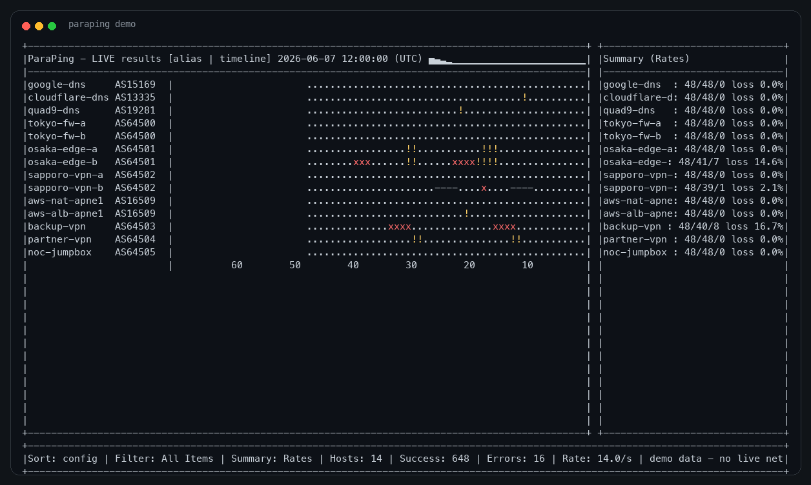
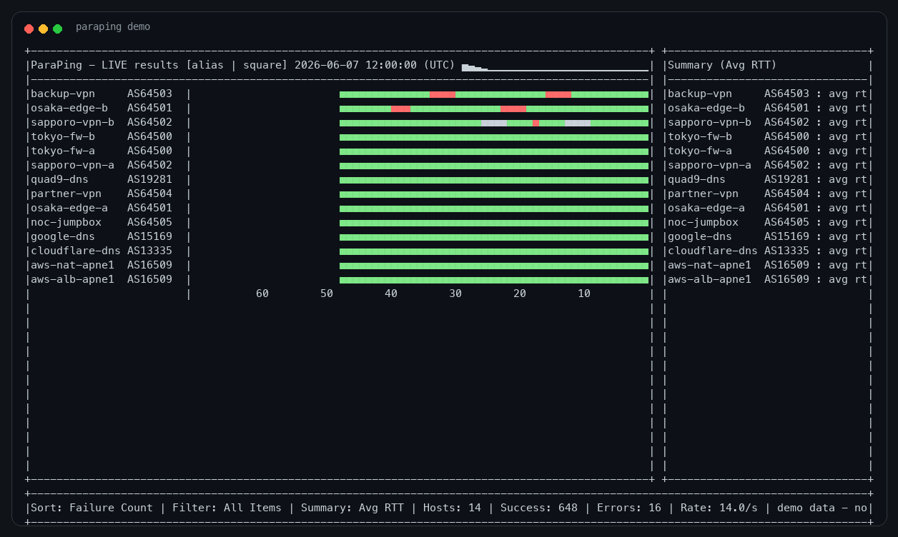
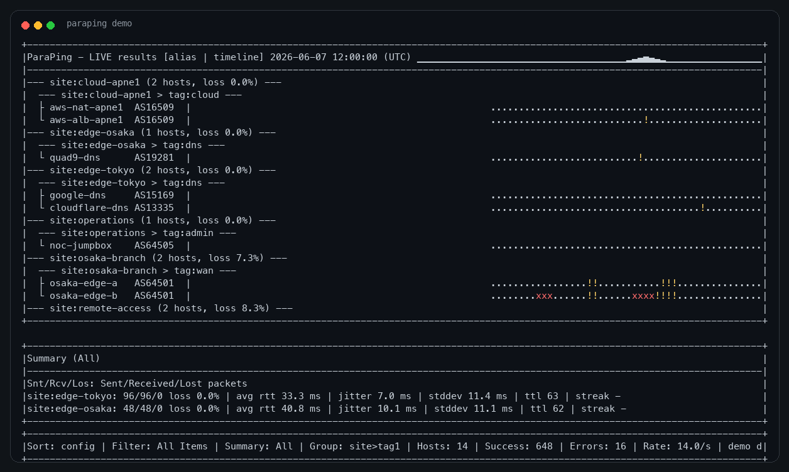
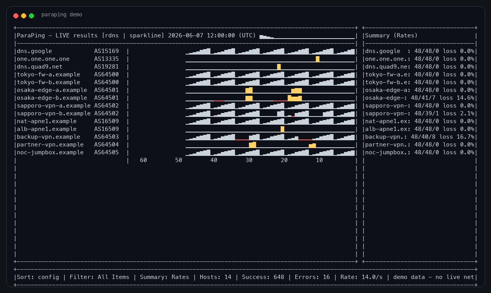
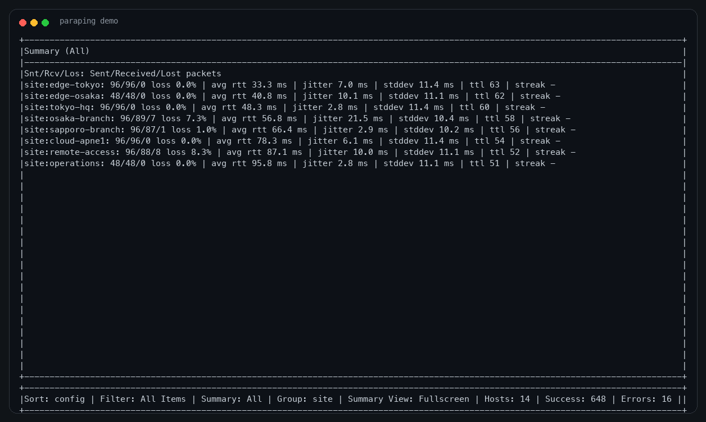

Group the view around how you operate.
Use site labels, tags, ASN, or hierarchical keys such as site>tag1 to turn a long host list into a readable operational map.
Parallel ICMP monitoring for terminal-first operators
ParaPing turns repeated ping checks into a live terminal cockpit: concurrent targets, compact history, group summaries, ASN context, and reverse DNS labels without leaving the shell.

CLI workflow
Start with command-line targets or a host file, then keep watching the timeline while sorting, filtering, pausing, and changing views interactively.

Use site labels, tags, ASN, or hierarchical keys such as site>tag1 to turn a long host list into a readable operational map.

Toggle display names between IP, reverse DNS, and aliases. Add ASN labels when route ownership matters during triage.

Independent updates
ParaPing is designed so each destination can keep producing results independently. Slow, failing, or pending checks do not hide what is happening elsewhere.

ParaPing is inspired by mping, an old C utility that circulated on personal websites roughly two decades ago. The goal is the same spirit: quick multi-target visibility from the terminal.
deadman is a lightweight, portable, curses-based host status checker using ping. For production environments where simple handling and portability matter, it is well worth evaluating.
Open deadman on GitHub